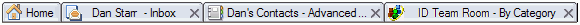

Working with window tabs
Window tabs make it convenient for you to switch from one open document or application to another in HCL Notes®.
About this task
You can specify how Notes® opens window tabs by setting a Windows and Themes user preference. For example, by default, every time you open a document or Notes® application, a new window tab opens, but you can set a preference to group the windows, so that all of your mail messages, for example, open in one tab.
You can perform the following tasks on window tabs:
Task |
Procedure |
|---|---|
Close a window tab |
Click the x in an active window tab. |
Close all window tabs |
Click |
Open the window tab in a new window |
Right-click the tab of the window, and then select Open in New Window. |
Switch window tabs |
Press CTRL+F8 |
Create a bookmark |
Drag a window tab to the Open button and then drop it where you want it in the Open list. There may be a slight delay while the list opens. |
Reorder window tabs |
Drag a selected tab to the desired position on the window bar. |
View thumbnails of all open window tabs |
Click theShow Thumbnails icon next to the Open button: Use the typeahead feature to view the desired thumbnail, and then double-click it to open the window tab. |
Notes Basic client users - You can specify how Notes® opens window tabs. Every time you open a document or application, a new window tab opens beneath the toolbar (or beneath the main menu bar if the toolbar is hidden.)
In this picture there are four window tabs: one for the Home page, and one each for Inbox, To Do list, and Notes® application.

Follow these steps to work with window tabs and new windows:
To |
Do this |
|---|---|
Close a window tab |
Click the x in an active window tab. |
Close all window tabs |
Click |
Switch window tabs |
Press CTRL+TAB |
Reorder window tabs |
Drag a selected tab to the desired position on the window bar. |
Create a bookmark |
Drag a window tab to the Bookmark bar or Bookmark list. |
Open the currently selected document, bookmark, or Notes® application in a new Notes® window |
Right-click the document or application's window tab and choose Open in New Window. Note: The
Save Window State command saves open window tabs in the current Notes® window
only -- it does not save them in other Notes® windows
open at the same time. |